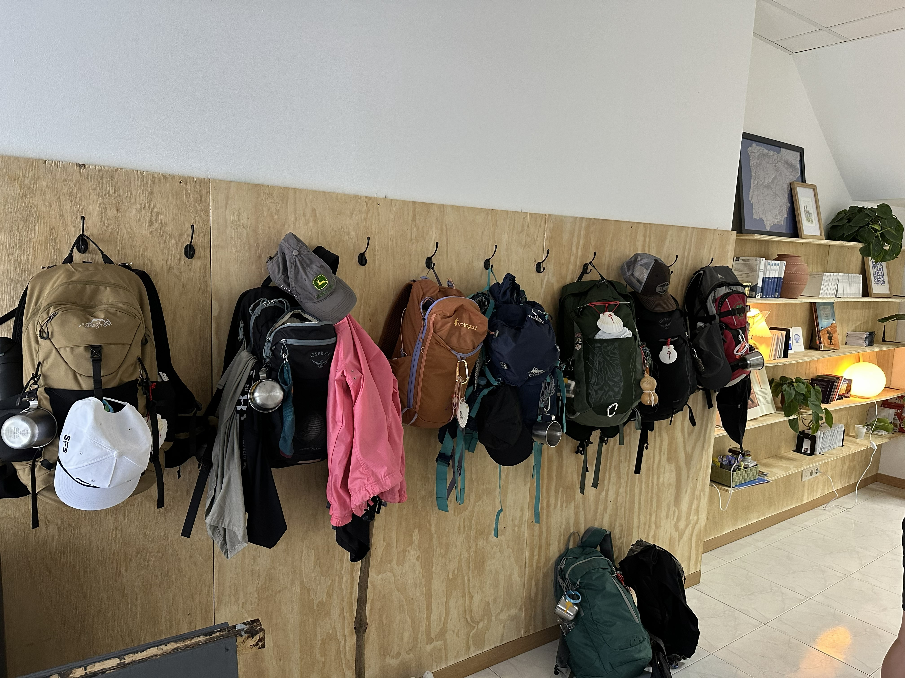
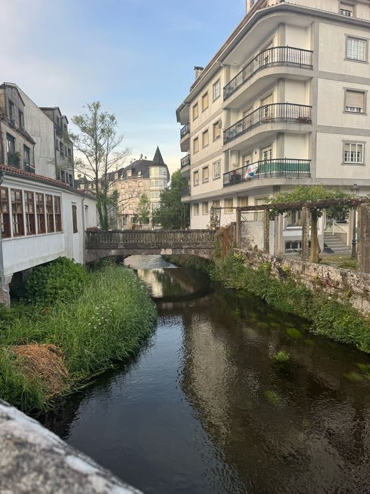

Camino Outreach
Camino Ministry

We will be running a newly established pilgrim center along the Camino de Santiago called Puntos de Luz (Points of Light) — a place where pilgrims can rest, be shown hospitality, and be presented with the Gospel.
Our vision to to provide a place where pilgrims who are weary can stop, be shown the love of Jesus, and leave a step closer to Him.
We also will be involved in:
Local Outreach
Beyond the Camino itself, we'll be building relationships in Caldas de Reis and the surrounding area — getting to know neighbors, local shopkeepers, and families, and looking for natural ways to serve the town we're now part of.
This is slower, quieter work than the pilgrim-facing side of the ministry, but it's what roots us in the community and makes Puntos de Luz feel like a real neighbor rather than a stop on a route.

Church Involvement
or sending-church moment
We're sent out by Hope Community Church, which continues to walk with us through prayer, encouragement, and accountability while we serve overseas.
We hope to stay connected to the local church body in Galicia as well, and to help pilgrims we meet find a church home of their own once their Camino ends.
Our Team
We're joined in this work by our teammates Seth & Crystal Grotzke and their family & Jodi Harrison, already living and serving in Galicia.